移动APP第一天
环境配置
所有环境变量配置所在皆为 系统属性-高级-环境变量-系统变量 快捷打开方式
window + x -> 系统 -> 高级系统设置 -> 高级 -> 环境变量 -> 系统变量
Java环境配置
安装Java JDK
下载Java JDK，网址：http://www.oracle.com/technetwork/cn/java/javase/downloads/jdk8-downloads-2133151-zhs.html 然后一路下一步就能够安装，安装完了就配置环境变量 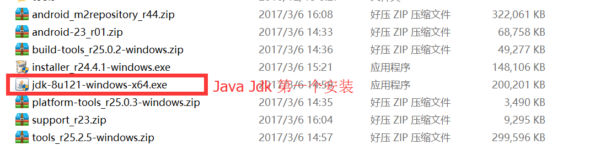
配置Java环境变量
1. 系统变量中添加配置 JAVA_HOME

2. Path环境变量中添加%JAVA_HOME%\bin;%JAVA_HOME%\jre\bin;

3. 在CLASSPATH环境变量中添加.;%JAVA_HOME%\lib\dt.jar;%JAVA_HOME%\lib\tools.jar;,没有CLASSPATH就自己新建一个
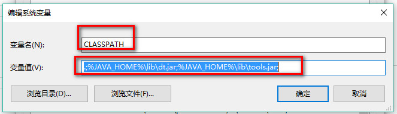
4. 打开cmd命令行,执行javac,如下图显示,则说明Java环境已配置正确

Android环境配置
下载Android SDK,下载地址 http://www.androiddevtools.cn/ 下载Android 环境依赖包：http://mirrors.neusoft.edu.cn/android/repository/


安装 Android SDK 和 依赖包
1. 安装Android SDK,可以采用默认安装，安装过程中会让选择是配置到所用用户还是当前用户，选择所有用户。默认安装路径应该是C:\Program Files (x86)\Android\android-sdk
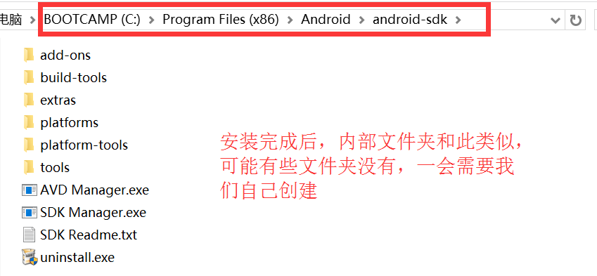
提示: 如果网好的话，可以直接用SDK Manager来安装剩下的所有工具包，后面所有步骤就不需要做了。没网就需要用到下面的离线包按步骤自行安装
2. 安装build-tools,参照下图
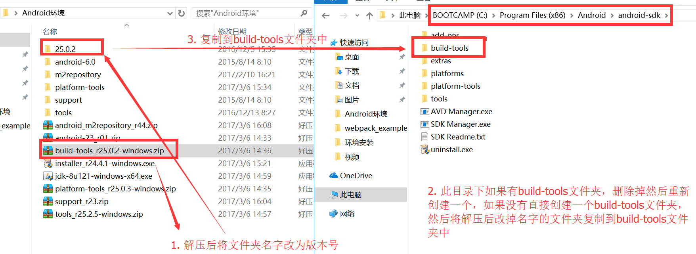
3. 安装platform-tools,直接解压复制到SDK Manager目录(如果下面已经存在platform-tools，就先把它删掉再复制)
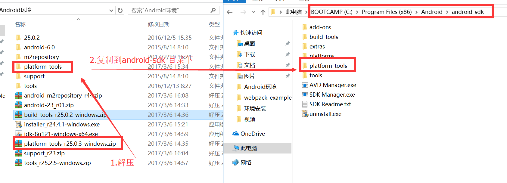
4. 安装platforms,参照下图

5. 安装tools，解压tools_r25.2.5压缩包,直接复制到SDK Manager目录(如果存在tools文件夹,就先删除在复制)

6.新建extras/android文件夹，将m2repository和support解压后的两个文件夹放进android文件夹下面
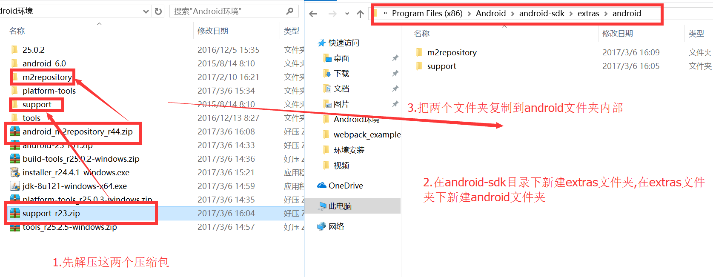
配置Android环境变量
1. 系统变量中添加配置 ANDROID_HOME

2. Path中添加Android的环境变量%ANDROID_HOME%\tools;%ANDROID_HOME%\platform-tools

3. 配置完毕后，在cmd命令行窗口中输入adb,见到如下提示，说明Android环境已经安装成功
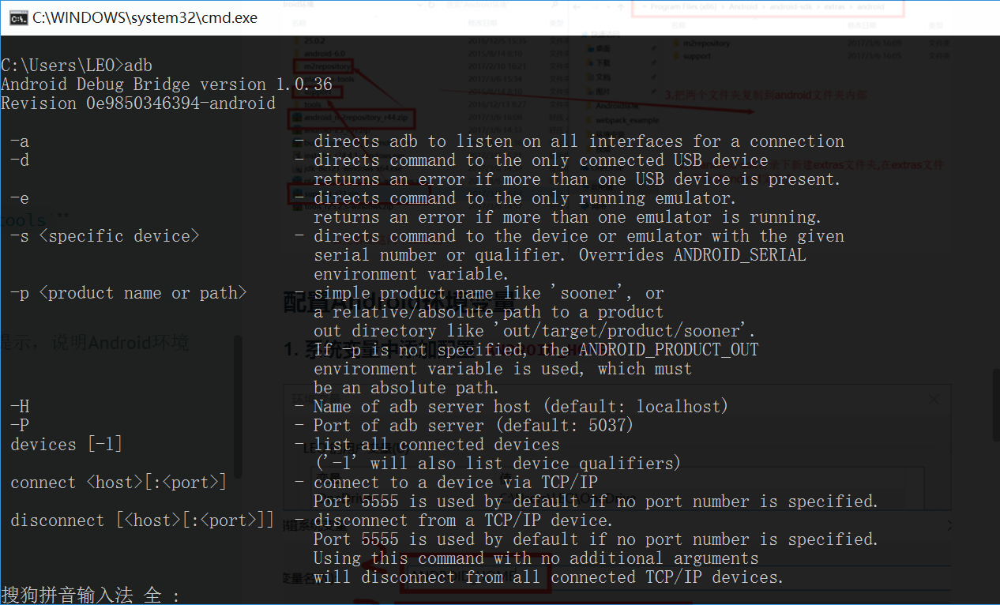
混合APP开发
安装项目依赖环境
// 1. 全局安装打包工具 cordova
npm install cordova -g
// 2. 全局安装框架ionic
npm install ionic -g
创建项目
// 使用ionic创建项目模板
ionic start ionic_example
打包APP
// 1. 添加项目平台(android)
ionic platform add android
// 2. 运行在手机
ionic run android
Webpack使用
webpack项目结构
在代码文件夹中创建项目文件夹
webpack_example,在项目文件夹中按照下图所示创建项目结构，其中node_modules和package.json不用手动创建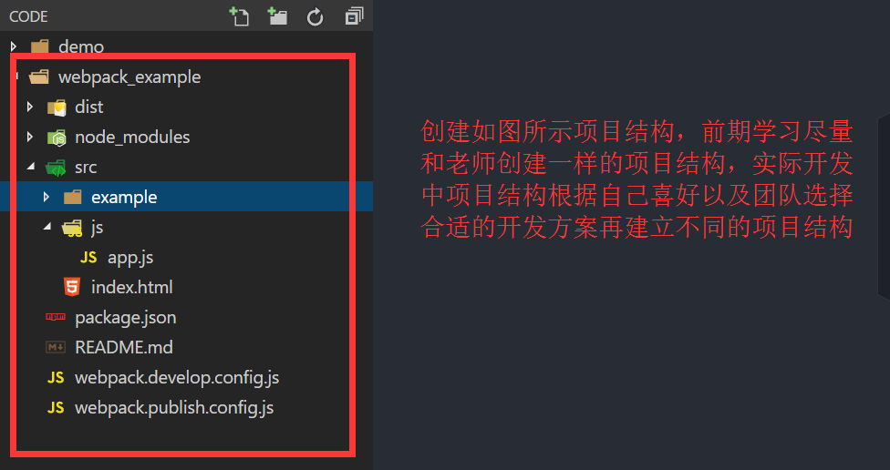
- 创建
package.json文件
// 在webpack_example文件夹下 打开命令行窗口 使用如下命令
npm init -y
全局安装
webpacknpm install webpack -g局部安装webpack及依赖
// 在webpack_example文件夹下 打开命令行窗口 使用以下命令局部安装 webpack npm install webpack --save-dev
webpack配置文件
基本配置
注意:
webpack默认配置文件名是webpack.config.js在项目根目录下直接使用
webpack命令会寻找webpack.config.js执行因为我们的配置文件名称为
webpack.develop.config.js,所以执行时需要使用webpack --config webpack.develop.config.js
- 打开
webpack.develop.config.js文件,配置以下内容
/**
* webpack 开发阶段配置文件
*/
var path = require('path');
module.exports = {
// 入口文件
entry: path.resolve(__dirname, 'src/js/app.js'),
// 输出文件
output: {
// 输出至哪个文件夹
path: path.resolve(__dirname, 'dist'),
// 输出的文件名
filename: 'bundle.js'
}
}
- 在
app.js文件中输入代码,使用webpack命令运行，可以看到一个bundle.js文件被生成(项目文件夹下的dist目录下会有一个bundle.js文件)
// 1. 在app.js文件中输入
var a = 10;
// 2. 在当前项目根目录打开命令行，使用以下webpack命令
webpack --config webpack.develop.config.js

配置文件改造
每次运行代码需要执行很长的命令比较麻烦,我们可以使用npm run命令来快捷执行
快捷执行
- 在package.json文件加入以下内容
"scripts": {
"test": "echo \"Error: no test specified\" && exit 1",
"develop": "webpack --config webpack.develop.config.js",
"publish": "webpack --config webpack.publish.config.js"
},
以后再运行代码就可以直接使用
npm run develop，效果和最开始直接执行webpack --config webpack.develop.config.js是一样的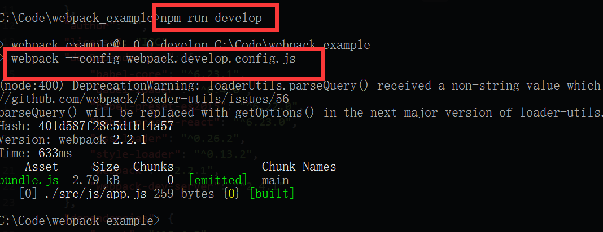
自动更新
如果希望代码一改动，不需要重新运行
npm run develop就可以自动构建，并且浏览器显示的内容也能自动刷新,需要安装webpack-dev-server并重新配置package.json文件
- 全局安装
webpack-dev-server
npm install webpack-dev-server -g
局部安装
webpack-dev-server及其依赖npm install webpack-dev-server --save-dev在
package.json文件中的develop下做如下更改"scripts": { "develop": "webpack-dev-server --config webpack.develop.config.js --devtool eval-source-map --progress --colors --inline --hot --content-base ./dist", }然后重新执行
npm run develop命令，访问http://localhost:8080此时直接修改
app.js中的内容,可以看到命令行窗口会自动构建，而且浏览器中的内容会自动刷新
注意: 如果有修改过
package.json文件，必须手动执行一次npm run develop命令构建项目
webpack加载器配置
loader：webpack提供的一批预处理工具，可以将浏览器不识别的代码处理成可识别可以执行的代码
babel-loader
babel-loader可以将ES6语法转换成ES5语法，将React语法转成普通JavaScript语法
- 在当前项目目录下安装
babel-loader
npm install babel-loader --save-dev
安装依赖模块
npm install babel-core babel-preset-es2015 babel-preset-react --save-dev修改
webpack.develop.config.js// 在module.exports对象下增加如下内容 module: { // webpack 1 写法 // loaders: [{ // test: /\.jsx?$/, //用正则匹配文件路径,匹配jsx和js // loader: 'babel-loader', // query: { // presets: ['es2015', 'react'] // } // }] // webpack 2 写法 rules: [{ test: /\.jsx?$/, use: [{ loader: 'babel-loader', options: { presets: ['es2015', 'react'] } }] }] }配置完毕后，可以下载
React和React-DOM书写React代码验证是否可以转换npm install react react-dom -save在
app.js文件中书写React代码/** * 项目入口文件 */ // 引入React import React, { Component } from 'react' // 引入ReactDOM import ReactDOM from 'react-dom' // 使用ReactDOM渲染html节点 ReactDOM.render( <div> hello world </div>, document.getElementById('app') ) // 在JavaScript文件中书写HTML代码，叫做jsx语法，所以React文件一般用jsx作为后缀名由于此时是
jsx语法,浏览器不识别,所以如果没有babel-loader直接编译，会报错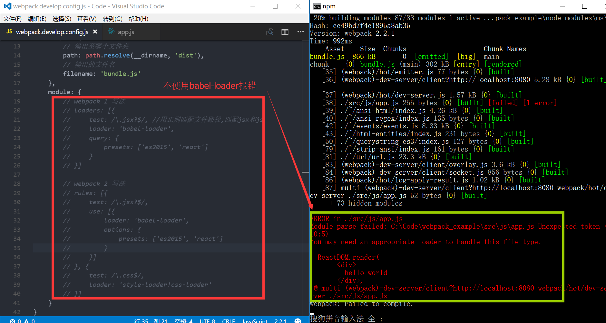
使用
babel-loader后,编译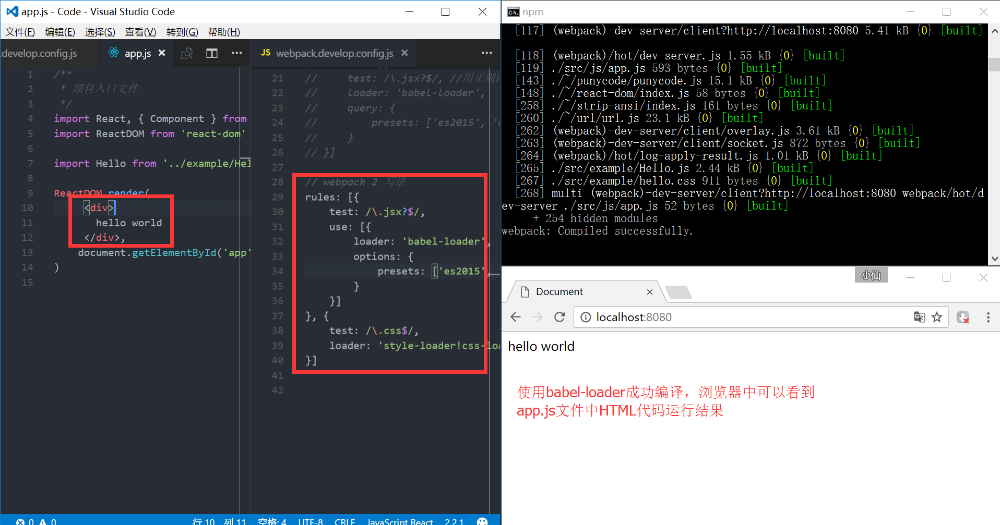
css-loader&style-loader
css-loader以及style-loader用来处理CSS，css-loader会遍历css文件，找到所有的url(...)并且处理。style-loader会把所有的样式插入到你页面的一个style tag中
安装
css-loader和style-loadernpm install css-loader style-loader --save-dev
修改配置文件,添加
css-loader和style-loaderrules: [{ test: /\.jsx?$/, use: [{ loader: 'babel-loader', options: { presets: ['es2015', 'react'] } }] }, { test: /\.css$/, // 注意:必须先写style-loader再写css-loader loader: 'style-loader!css-loader' // 下面这张写法也可以 // use: ['style-loader', 'css-loader'] }]用
React自定义一个组件，新建一个文件Hello.jsimport React, { Component } from 'react' import './hello.css' export default class Hello extends Component { render() { return ( <div > <h1>hello world!</h1> </div> ) } }新建一个
hello.css文件，并在Hello.js中引入这个css文件h1 { color: red; }在
app.js中使用这个Hello组件/** * 项目入口文件 */ import React, { Component } from 'react' import ReactDOM from 'react-dom' import Hello from '../example/Hello.js' ReactDOM.render( <div> <Hello /> </div>, document.getElementById('app') )使用
npm run develop编译查看运行结果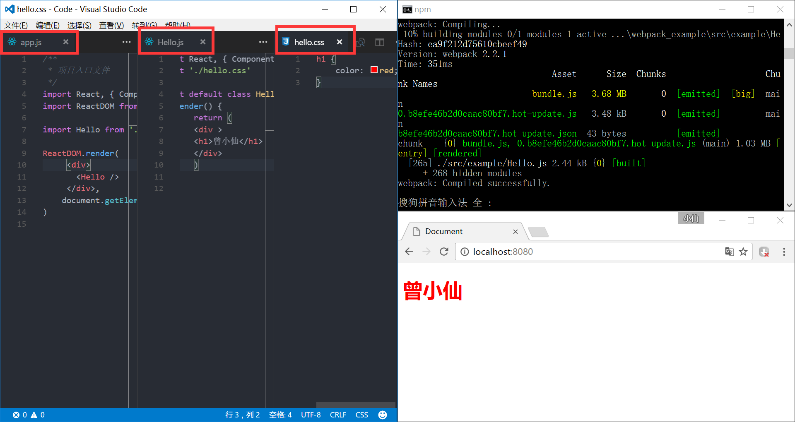
scss-loader
scss-loader将SASS和LESS转换成正常可识别CSS
安装
sass-loader及其依赖npm install node-sass npm install sass-loader --save-dev修改配置文件,添加
sass-loaderrules: [ // 转换ES6语法和React jsx语法 { test: /\.jsx?$/, use: [{ loader: 'babel-loader', options: { presets: ['es2015', 'react'] } }] }, // 处理js中引用css文件 { test: /\.css$/, // loader: 'style-loader!css-loader' use: ['style-loader', 'css-loader'] }, // 处理js中引用sass文件 { test: /\.scss$/, use: ['style-loader', 'css-loader', 'sass-loader'] } ]新建
_base.scss和hello.scss文件
重新使用
npm run develop构建项目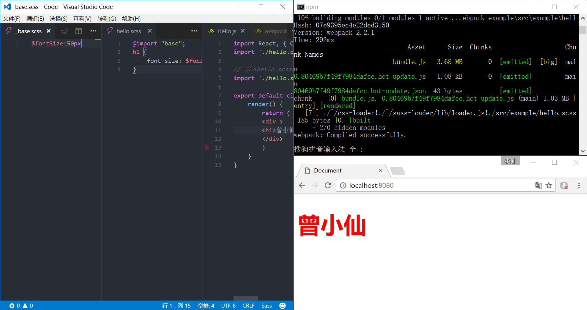
url-loader
url-loader用来打包文件和图片以及处理icon字体的加载器
安装
url-loader和file-loadernpm install url-loader file-loader -save-dev修改配置文件，在
rules下面添加
// 处理图片操作
{
test: /\.(png|jpg|jpeg|gif)$/,
use: 'url-loader?limit=25000'
}
创建
images文件夹引入一张图片，在Hello.js组件中添加image标签，然后在hello.css文件中设置图片地址及其他样式
重新使用
npm run develop构建项目
ulr-loader配置信息的参数“?limit=8192”表示将所有小于8kb的图片都转为base64形式 （其实应该说超过8kb的才使用 url-loader 来映射到文件，否则转为data url形式）。这样做的好处是较小的图片不用去发送网络请求。
url-loader也可以用来处理icon字体，配置信息为:
// 处理iconfont
{
test: /\.(eot|woff|ttf|woff2|svg)$/,
use: 'url-loader?limit=2500'
}
移动APP第二天
webpack发布策略
修改配置文件
将
webpack.develop.config.js中的内容拷贝到webpack.publish.config.js中,然后进行修改,如下: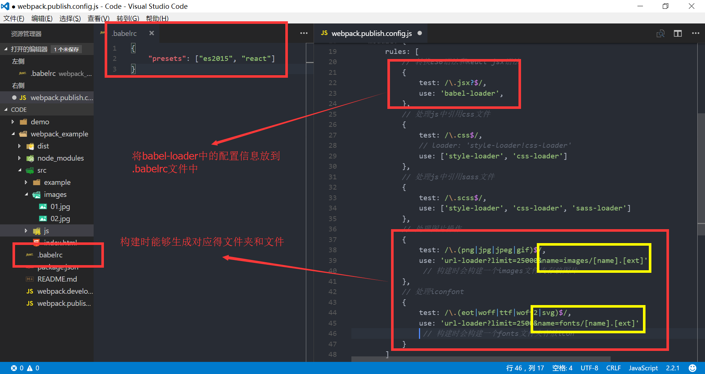
- 执行
npm run publish可以看到dist目录下生成了bundle.js和对应的images文件夹和图片 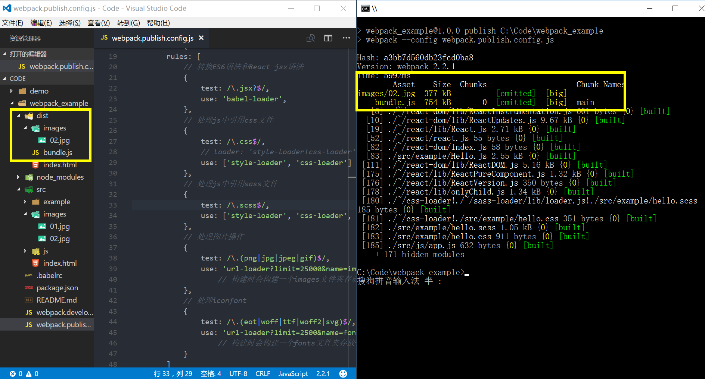
分离第三方包
在
webpack.publish.config.js中做如下修改修改入口文件
// 分离第三方包后的入口文件 entry:{ app:path.resolve(__dirname, 'src/js/app.js'), // 需要分离的第三方包名写在数组中 vendors:['react','react-dom'] },增加插件
plugins:[ // 分离第三方包插件 new webpack.optimize.CommonsChunkPlugin({name:'vendors',filename:'vendors.js'}) ]
在
index.js文件中引用vendors.js文件,然后执行编译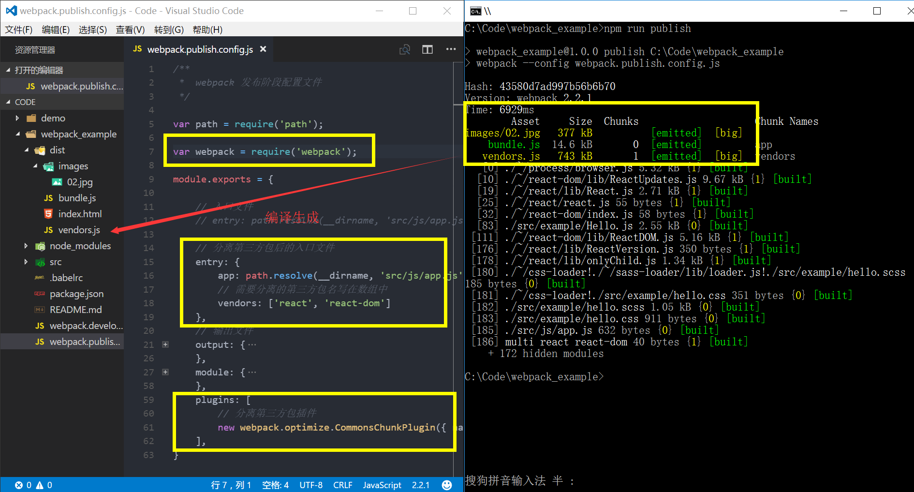
webpack常用插件
删除文件夹插件
clean-webpack-plugin:在每次重新构建项目时，会自动删除上一次构建产生的文件夹和文件，防止产生冲突
安装插件
npm install clean-webpack-plugin -save-dev使用插件，在
webpack.publish.config.js中做修改- 引入插件:
var CleanPlugin = require('clean-webpack-plugin'); 配置插件:
new CleanPlugin(['dist'])
- 引入插件:
npm run publish重新构建项目
自动生成HTML页面插件
html-webpack-plugin根据配置信息自动生成一个HTML页面,配置信息中主要填写引用的css和js文件
安装插件
npm install html-webpack-plugin -save-dev使用插件
引入插件
// 自动生成HTML页面 var HtmlWebpackPlugin = require('html-webpack-plugin');配置插件
new HtmlWebpackPlugin({ // 需要复制的HTML页面模板(在src目录下创建template.html) template: './src/template.html', htmlWebpackPlugin: { "files": { // 需要引入的css文件 "css": ["app.css"], // 需要引入的js文件 "js": ["vendors.js", "bundle.js"] } }, // 代码压缩 minify: { // 删除注释 removeComments: true, // 删除空格 collapseWhitespace: true, // 删除空格缩进 removeAttributeQuotes: true } })
重新构建项目

代码压缩混淆插件
webpack.optimize.UglifyJsPlugin是webpack内置插件,用来压缩js代码
直接在
plugins中配置插件// 代码压缩插件 new webpack.optimize.UglifyJsPlugin({ compress: { warnings: false } })重新构建项目对比压缩前和压缩后代码大小区别
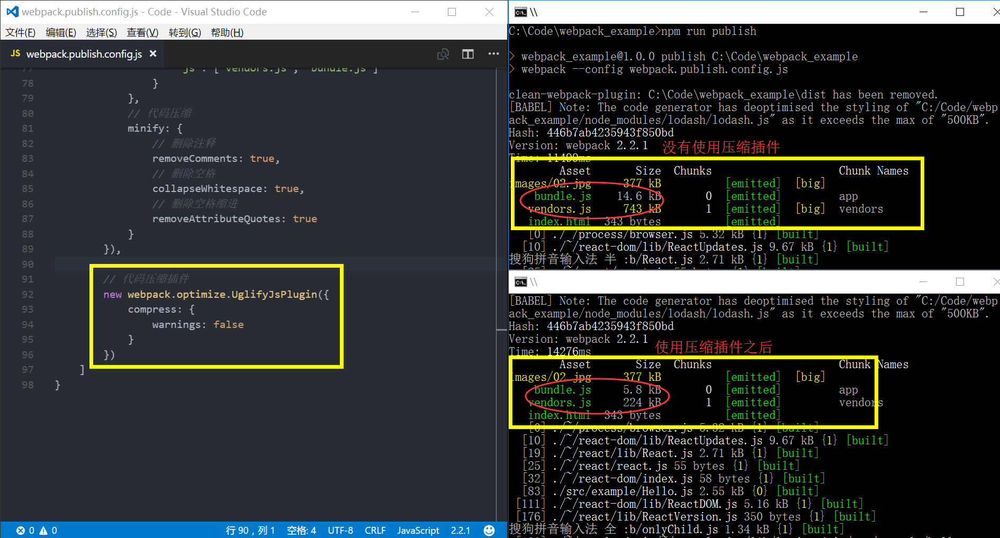
抽取css文件插件
webpack编译打包的CSS代码正常情况下会以style样式内嵌在目标html文件里面，但是如果用了extract-text-webpack-plugin这个插件之后会先编译并打包所有的CSS代码
安装插件
npm install extract-text-webpack-plugin -save-dev使用插件
- 引入插件
// 抽取css文件插件
var ExtractTextPlugin = require('extract-text-webpack-plugin');
- 修改配置文件
// 处理js中引用css文件
{
test: /\.css$/,
// loader: 'style-loader!css-loader'
// use: ['style-loader', 'css-loader']
// 使用抽取css插件后加载器写法
use: ExtractTextPlugin.extract({
fallback: "style-loader",
use: "css-loader"
})
}
// 抽取css文件插件
new ExtractTextPlugin('app.css')
重新构建项目，会多生成一个
app.css文件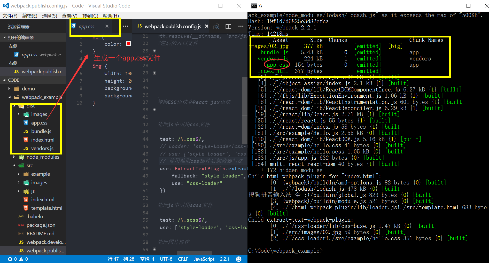
extract-text-webpack-plugin插件也可以抽取sass，只需要修改一下配置文件
// 处理js中引用sass文件
{
test: /\.scss$/,
// use: ['style-loader', 'css-loader', 'sass-loader']
// 使用抽取sass写法
use: ExtractTextPlugin.extract({
fallback: "style-loader",
use: "css-loader!sass-loader"
})
}
压缩代码插件(删除警告)
在配置文件中添加如下代码:
// 删除警告 new webpack.DefinePlugin({ 'process.env': { NODE_ENV: '"production"' } })
自动打开浏览器插件
open-browser-webpack-plugin在开发阶段使用，构建完毕自动打开浏览器
安装插件
npm install open-browser-webpack-plugin -save-dev使用插件: 在
webpack.develop.config.js中添加引入插件
// 自动打开浏览器插件 var OpenBrowserPlugin = require('open-browser-webpack-plugin');配置插件
plugins: [ new OpenBrowserPlugin({ url: 'http://localhost:8080', browser: 'chrome' }) ]
使用
npm run develop构建项目可以自动打开浏览器
React
React简介
React是一个用于构建用户界面的JavaScript库。React主要用于构建UI，很多人认为React是MVC中的V（视图）。React起源于
React四个核心概念
Virtual DOM 虚拟DOM
组件并不是真实的
DOM节点，而是存在于内存之中的一种数据结构，叫做虚拟DOM(Virtual DOM)。只有当它插入文档以后，才会变成真实的DOM。根据React的设计，所有的DOM变动，都先在虚拟DOM上发生，然后再将实际发生变动的部分，反映在真实DOM上，这种算法叫做DOM diff，它可以极大提高网页的性能表现。
组件化
React允许将代码封装成组件(component)，然后像插入普通HTML标签一样，在网页中插入这个组件。React.createClass方法就用于生成一个组件类
// 创建组件
var HelloMessage = React.createClass({
render: function() {
return <h1>Hello {this.props.name}</h1>;
}
});
// 使用组件
ReactDOM.render(
<HelloMessage name="John" />,
document.getElementById('example')
);
JSX语法
HTML 语言直接写在 JavaScript 语言之中，不加任何引号，这就是 JSX 的语法，它允许 HTML 与 JavaScript 的混写。
JSX 的基本语法规则：遇到 HTML 标签（以 < 开头），就用 HTML 规则解析；遇到代码块（以 { 开头），就用 JavaScript 规则解析。
var names = ['赵日天', '叶良辰', '龙傲天'];
ReactDOM.render(
<div>
{
names.map(function (name) {
return <div>Hello, {name}!</div>
})
}
</div>,
document.getElementById('example')
);

DataFlow 单向数据流
react中，应用的数据传递是单向的通过state和props对象，不同于angular的双向数据绑定。单向数据流的意思就是，在一个多组件构成的应用中，每一个父组件负责管理state并且通过props传递给下一层组件。
状态（state）通过setState方法来更新，来确保UI更新发生。如果有必要state的最终结果值应该被当作 子组件的属性 传递给子组件，在子组件中通过this.props来获取值。
组件生命周期
组件的生命周期可分成三个状态:
Mounting：已插入真实 DOMUpdating：正在被重新渲染Unmounting：已移出真实 DOM
生命周期函数
componentWillMount在渲染前调用,在客户端也在服务端。componentDidMount: 在第一次渲染后调用，只在客户端。之后组件已经生成 了对应的DOM结构，可以通过this.getDOMNode()来进行访问。 如果你想和其他JavaScript框架一起使用，可以在这个方法中调用setTimeout, setInterval或者发送AJAX请求等操作(防止异部操作阻塞UI)。componentWillReceiveProps在组件接收到一个新的prop时被调用。这个方法在初始化render时不会被调用。shouldComponentUpdate返回一个布尔值。在组件接收到新的props或者state时被调用。在初始化时或者使用forceUpdate时不被调用。可以在你确认不需要更新组件时使用。componentWillUpdate在组件接收到新的props或者state但还没有render时被调用。在初始化时不会被调用。componentDidUpdate在组件完成更新后立即调用。在初始化时不会被调用。componentWillUnmount在组件从 DOM 中移除的时候立刻被调用。
ES5组件生命周期函数写法
// ES5定义组件的写法
import React, {Component} from 'react';
// 创建组件
var Life = React.createClass({
// getDefaultProps,getInitialState在es6的写法中不被支持
// 初始化props属性方法
getDefaultProps(){
console.log("getDefaultProps - 初始化props属性");
},
// 初始化我们的state属性
getInitialState(){
console.log("getInitialState - 初始化state的值");
return {
props1:"初始化state的值"
}
},
// 组件将要被渲染到真实的dom节点中
componentWillMount(){
console.log("componentWillMount - 组件将要被渲染到真实的dom节点");
},
// 组件已经插入到真实的dom节点中
componentDidMount(){
console.log("componentDidMount - 组件已经插入到真实的dom节点");
},
// 组件是否要被重新渲染
shouldComponentUpdate(){
// 这个方法比较特殊，如果你要重写，你要在这里手动的进行一下state值是否发生改变的判断，因为已经把之前的方法覆盖了
console.log("shouldCompontentUpdate - 判断组件是否要被重新渲染");
return true;
},
// 组件将要被重新渲染
componentWillUpdate(){
console.log("componentWillUpdate - 组件将要被重新渲染");
},
// 组件已经被重新渲染
componentDidUpdate(){
console.log("componentDidUpdate - 组件已经被重新渲染");
},
// 组件将要接受到新属性
componentWillReceiveProps(){
console.log("componnentWillReceiveProps - 组件将要接受到新属性");
},
click1(){
console.log("点击事件");
this.setState({
props1:"改变state的值"
})
console.log("2");
console.log(this.state.props1);
},
render() {
console.log("render");
return (
<div>
<h1 onClick={this.click1}>{this.state.props1}</h1>
</div>
)
}
})
module.exports=Life;
ES6组件生命周期函数写法
// ES6语法定义的组件生命周期
import React, {Component} from 'react';
// 创建并导出组件
export default class Life extends Component {
constructor(props){
super(props)
console.log("构造函数")
// 初始化了我们的state，这是被推荐的写法
this.state = {
props1:"初始化state"
}
}
static defaultProps = {
autoPlay: false,
maxLoops: 10,
}
// 组件将要被渲染到真实的dom节点中
componentWillMount(){
console.log("componentWillMount - 组件将要被渲染到真实的dom");
}
// 组件已经插入到真实的dom节点中
componentDidMount(){
console.log("componentDidMount - 组件已经插入到真实的dom");
}
// 组件是否要被重新渲染
shouldComponentUpdate(){
console.log("shouldCompontentUpdate - 判断组件是否要被重新渲染");
return true;
}
// 组件将要被重新渲染
componentWillUpdate(){
console.log("conpontentWillUpdate - 组件将要被重新渲染");
}
// 组件已经被重新渲染
componentDidUpdate(){
console.log("conpontentDidUpdate - 组件已经被重新渲染");
}
// 组件将要接受到新属性
componentWillReceiveProps(){
console.log("compintentWillReceiveProps - 组件将要接受到新属性");
}
click1 = ()=>{
console.log("点击了单击事件");
this.setState({
props1:"改变state的值"
})
console.log("点击了单击事件结束");
}
render() {
console.log("render");
return (
<div>
<h1 onClick={this.click1}>{this.state.props1}</h1>
</div>
)
}
}
ES6定义组件语法及注意事项
语法规定
定义模块
class Life extends Component
导出模块
export default
引入模块
import Life from '../example/Life.js'
默认属性
static defaultProps = {
autoPlay: false,
maxLoops: 10,
};
默认state
// 构造函数
constructor(props){
super(props)
// 初始化state
this.state = {
props1:"初始化state"
}
}
定义方法
生命周期方法直接方法名小括号
componentWillMount(){ console.log("componentWillMount - 组件将要被渲染到真实的dom"); }自定义方法使用箭头函数
click1 = ()=>{ console.log("点击了单击事件"); this.setState({ props1:"改变state的值" }) console.log("点击了单击事件结束"); }
注意事项
箭头函数转ES5需要额外安装插件
npm install --save-dev babel-preset-stage-0
npm install --save-dev babel-plugin-transform-class-properties
下面两种事件函数，一种直接函数名小括号，一种是箭头函数 在给具体元素绑定函数时，箭头函数依旧需要使用一个箭头函数来绑定 函数名小括号形式在绑定时需要绑定this
// 单击事件处理方法
handleClick(pm1,pm2,pm3,e) {
console.log(pm1); // 23
console.log(pm2); // dfdf
console.log(pm3); // function
console.log(e); // event
this.setState({ liked: !this.state.liked });
}
// 用箭头函数去定义自己的方法
handleMouseOver=(str)=>{
console.log(str);
}
render() {
const text = this.state.liked ? 'like' : 'haven\'t liked';
// return；里面是要渲染的html页面
return (
<p onMouseOver={()=>this.handleMouseOver("代码")} onClick={this.handleClick.bind(this,23,"dfdf",function(){})}>
You {text} this. Click to toggle.
</p>
);
}
获取真实DOM
下面代码中，组件
MyComponent的子节点有一个文本输入框，用于获取用户的输入。这时就必须获取真实的DOM节点，虚拟DOM是拿不到用户输入的。为了做到这一点，文本输入框必须有一个ref属性，然后this.refs.[refName]就会返回这个真实的DOM节点。需要注意的是，由于
this.refs.[refName]属性获取的是真实DOM，所以必须等到虚拟DOM插入文档以后，才能使用这个属性，否则会报错。下面代码中，通过为组件指定Click事件的回调函数，确保了只有等到真实DOM发生Click事件之后，才会读取this.refs.[refName]属性总结:
- 真实
DOM节点必须等待虚拟DOM被插入文档以后才可以使用，即执行了componentDidMount函数后才能被获取。- 给真实DOM标签添加ref属性:
ref = "refName"- 使用
this.refs.[refName]获取真实DOM
var MyComponent = React.createClass({
handleClick: function() {
// 使用原生的 DOM API 获取焦点
this.refs.myInput.focus();
},
render: function() {
// 当组件插入到 DOM 后，ref 属性添加一个组件的引用于到 this.refs
return (
<div>
<input type="text" ref="myInput" />
<input
type="button"
value="点我输入框获取焦点"
onClick={this.handleClick}
/>
</div>
);
}
});
ReactDOM.render(
<MyComponent />,
document.getElementById('example')
);
DOM事件监听
- 注册事件监听的位置必须在
componentDidMount之后,即真实DOM被渲染之后- 组件销毁时需要注销事件监听函数
- 发送Ajax请求也应该在
componentDidMount事件内部
componentDidMount() {
// 1、在已经插入到真实的dom节点之后，注册窗体改变大小的事件监听
// 3、用ajax发起数据请求的操作也要在componentDidMount方法里面去调用
window.addEventListener('resize', this.handleResize);
}
componentWillUnmount() {
// 2、在组件将要被卸载的时候移除监听事件，防止对其他组件的影响
window.removeEventListener('resize', this.handleResize);
}
属性校验
随着应用不断变大，保证组件被正确使用变得非常有用。为此我们引入
propTypes。React.PropTypes提供很多验证器 (validator) 来验证传入数据的有效性。当向props传入无效数据时，JavaScript 控制台会抛出警告。注意为了性能考虑，只在开发环境验证propTypes可校验属性:http://www.reactjs.cn/react/docs/reusable-components.html
语法
// 进行属性校验
export default class PropsCheck extends Component {
constructor(props) {
super(props);
}
// 进行属性校验
static propTypes = {
autoPlay: React.PropTypes.bool.isRequired,
maxLoops: React.PropTypes.number.isRequired
// ... 其他属性校验
}
}
使用
添加了属性校验的组件,在使用时如果这些属性没有设置，就会报警告
受控表单组件
受控组件就是为某个form表单组件添加value属性；
render: function() {
return <input type="text" value="Hello!" />;
}
非受控组件就是没有添加value属性的组件；
<input type="text" />
注意:一旦设置了value属性的表单组件,即受控表单组件，用户交互将不能直接改变表单的内容。必须通过setState改变表单的状态来控制表单显示内容。所以一般定义一个受控表单组件，可以如下
export default class InputItem extends React.Component{
constructor(props){
super(props);
this.state = {
value: ""
}
}
componentWillReceiveProps(nextProps){
this.setState({
value: nextProps.value
})
}
_onChange(e){
this.setState({
value: e.target.value
})
}
render(){
return (
<input type="text"
value={this.state.value}
onChange={this._onChange.bind(this)}/>
);
}
}
组合组件
概念
在编程的时候碰到相同的功能，可以通过抽出公共方法或者类来实现复用。当我们构建新的组件的时候，尽量保持我们的组件同业务逻辑分离，将相同功能的组件抽出一个组件库，通过复用这些组件库来提高我们代码的重用性。
在
React组件中要包含其他组件作为子组件，只需要把组件当作一个DOM元素引入就可以了。
循环插入子元素
如果组件中包含通过循环插入的子元素，为了保证重新渲染
UI的时候能够正确显示这些子元素，每个元素都需要通过一个特殊的key属性指定一个唯一值。
// 循环生成列表组件
class TodoList extends Component{
render() {
let createItem = function(item) {
// 为每一个元素添加一个key值
return <li key={item.id}>{item.text}</li>;
};
return <ul>{this.props.items.map(createItem)}</ul>;
}
}
移动APP第三天
属性传递
props属性传递
在组合组件中，如果父组件向子孙组件传递属性，传统方式可以通过
props属性一层一层传递
class TodoApp extends Component {
constructor(props) {
super(props);
// 初始化了我们的state，这是被推荐的写法
this.state = {
items: [],// 存我们输入的数据
text: '' // 每次输入文本
};
}
render() {
return (
<div>
<h3>TODO</h3>
// 给TodoList组件添加了一个items属性
<TodoList items={this.state.items} />
</div>
);
}
}
class TodoList extends Component {
render() {
let createItem = function (item) {
return <li key={item.id}>{item.text}</li>;
};
// this.props.items 获取父组件传递过来的数据
return <ul>{this.props.items.map(createItem)}</ul>;
}
}
上面的代码，如果我们想把当前
TodoApp组件内部的items数组传递给子组件TodoList，需要在使用TodoList组件时添加一个属性，将items数组传递过去。在TodoList组件内部可以使用this.props.items获取到传递过来的数据。
context属性传递
如果组件嵌套太深，
props的传递方式会增加组件的依赖，每个组件之间最好是低耦合的，所以我们可以使用context属性实现组件之间数据的传递。
基本使用
父组件中通过
getChildContext设置需要传递的属性,同时需要使用childContextTypes设置传递的属性校验
// 通过这个方法去传递属性
getChildContext: function() {
return {
color: "red",
age:12
};
},
// 传递给子孙属性的类型校验
childContextTypes: {
color: React.PropTypes.string,
age: React.PropTypes.number
}
子组件接收传递过来的属性必须使用
contextTypes接收，然后通过this.context.[prop]即可使用传递过来的属性
// 在子组件里面接收并校验父组件里面的属性
contextTypes: {
color: React.PropTypes.string
}
// 使用
this.context.color
显示隐藏动画效果
React动画效果主要是指组件显示和移除时的一些过度动画
使用
引入动画库和动画样式
import ReactCSSTransitionGroup from 'react-addons-css-transition-group' import './animate.css'使用
ReactCSSTransitionGroup包裹需要执行动画的元素return ( <div> <button onClick={this.handleAdd}>Add Item1</button> {/*这个组件虽然叫动画，但是它只负责显示隐藏的动画*/} {/*你想让谁有显示隐藏的动画你就用ReactCSSTransitionGroup包裹谁*/} {/*后添加进去的元素和删除的元素才有动画效果，同时添加元素和ReactCSSTransitionGroup是没有动画效果的*/} <ReactCSSTransitionGroup component="div" // 设置被包裹的父元素 transitionName="example" // 动画样式类名前缀 transitionAppear={true} // 设置默认出现的元素动画 transitionEnterTimeout={500} transitionLeaveTimeout={300} > {items} </ReactCSSTransitionGroup> </div> );设置css动画样式
// animate.css /*-enter是进入的时候的初始状态*/ .example-enter { opacity: 0.01; } /*-enter-active是进入时候的结束状态*/ .example-enter.example-enter-active { opacity: 1; transition: opacity 500ms ease-in; } // 离开时候的初始状态 .example-leave { opacity: 1; } // 离开时候的结束状态 .example-leave.example-leave-active { opacity: 0.01; transition: opacity 300ms ease-in; } // 默认元素出现时的初始状态 .example-appear { opacity: 0.01; } // 默认元素出现时的结束状态 .example-appear.example-appear-active { opacity: 1; transition: opacity .5s ease-in; }
插件介绍
diff算法
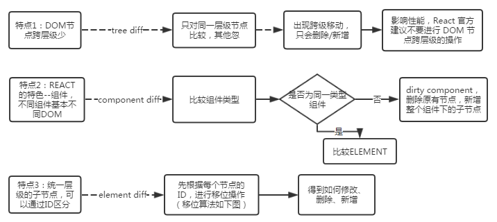

项目分析
分析需求

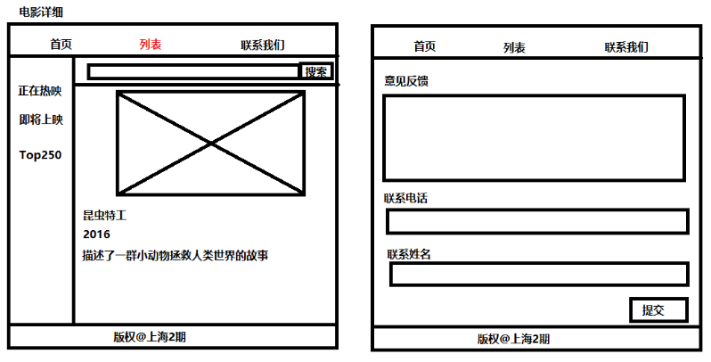
确定技术栈
webpack + react +react-router + fetch + sass + Flex + ES6
路由
采用
react-router： http://react-guide.github.io/react-router-cn/
路由基础实现
安装
react-routernpm install react-router -save组件分离
entry: { app: path.resolve(__dirname, 'src/js/app.js'), // 需要分离的第三方包名写在数组中 vendors: ['react', 'react-dom','react-router'] }引入
Routerimport React from 'react' import { Router, Route, Link ,hashHistory} from 'react-router'路由代码
render() { return ( <Router history={hashHistory}> <Route path="/" component={AppContainer}> <Route path="home" component={HomeContainer} /> <Route path="movie" component={MovieContainer}> <Route path="movieList" component={MovieListContainer} /> <Route path="movieDetail" component={MovieDetailContainer} /> <Route path="movieSearch" component={MovieSearchContainer} /> </Route> <Route path="about" component={AboutContainer} /> </Route> </Router> ); }组件代码
render() { return ( <div> 根容器组件 <div> <Link to='/home'>首页</Link> <Link to='/movie'>电影</Link> <Link to='/about'>关于我们</Link> <Link to='/movie/movieList'>电影列表</Link> <Link to='/movie/movieDetail'>电影详细</Link> </div> <div> {this.props.children} </div> </div> ); }设置默认页面
<Route path="/" component={AppContainer}> // 当URL为 / 时渲染 HomeContainer <IndexRoute component={HomeContainer} /> </Route>
绝对路由&路由重定向
解决路由层次嵌套过深问题

兼容旧路由-路由重定向
// 兼容旧路由
<Redirect from = 'movieList' to='/movieList'></Redirect>
进入/离开路由钩子
onEnter和onLeave两个hook，在路由跳转过程中，onLeave hook会在所有将离开的路由中触发，onEnter hook会在所有进入的路由中触发。
<Route path="home"
component={HomeContainer}
onEnter={()=>{console.log('进入了HomeContainer')}}
onLeave={()=>{console.log('离开了HomeContainer')}}
/>
路径语法
路由路径是匹配一个（或一部分）URL 的 一个字符串模式。大部分的路由路径都可以直接按照字面量理解，除了以下几个特殊的符号：
:paramName匹配一段位于 /、? 或 # 之后的 URL。 命中的部分将被作为一个参数()在它内部的内容被认为是可选的*匹配任意字符（非贪婪的）直到命中下一个字符或者整个 URL 的末尾，并创建一个 splat 参数
<Route path="/hello/:name"> // 匹配 /hello/michael 和 /hello/ryan
<Route path="/hello(/:name)"> // 匹配 /hello, /hello/michael 和 /hello/ryan
<Route path="/files/*.*"> // 匹配 /files/hello.jpg 和 /files/path/to/hello.jpg
三种history
hashHistory
可以兼容低版本浏览器,路径后面带有
#http://localhost:8080/#/movieDetail
browserHistory
使用最新
HTML5的history API,路由不带#http://localhost:8080/movieDetail
createMemoryHistory
在做服务端渲染时使用
createMemoryHistory
组件生命周期
组件跳转时的生命周期基本和组件生命周期一致，进入到一个组件，那么上一个组件被销毁，新的组件被渲染。如组件A->组件B: A:
componentWillUnmount销毁A组件 B:componentDidMount渲染B组件
组件外跳转
在
HTML部分可以使用Link跳转，有时需要在JS内跳转，则需要使用browserHistory的push方法，或者this.context.router来实现
browserHistory
import { Router, browserHistory } from 'react-router'
// 执行跳转
browserHistory.push('/home')
this.context.router
// 获取router
static contextTypes = {
router:React.PropTypes.object
}
// 组件渲染完毕的方法中进行跳转
componentDidMount(){
this.context.router.push('/home')
}
基本布局

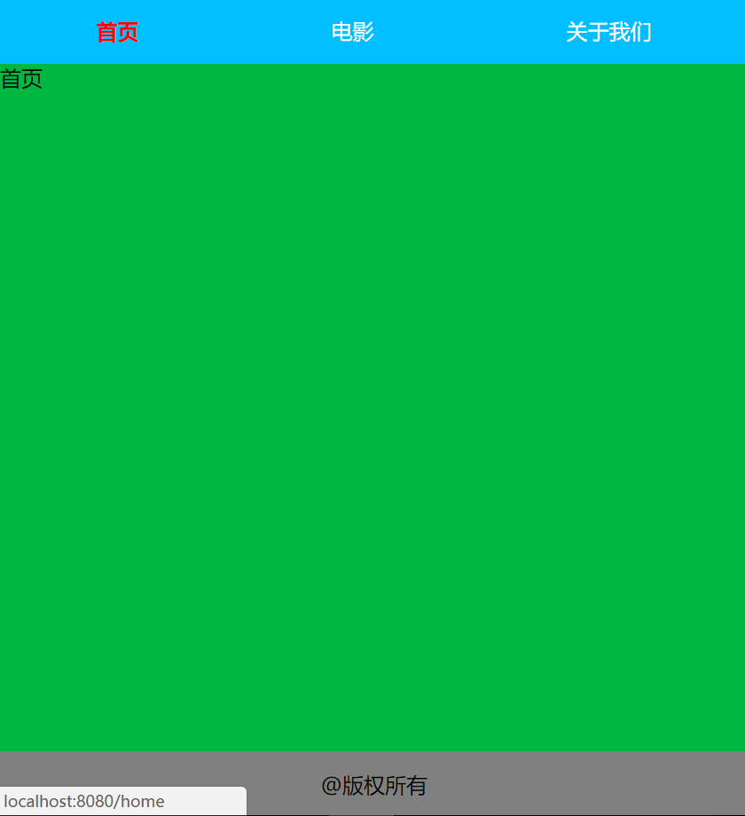
Flex-box
电影页面布局
MovieContainer
JSX页面
render() {
return (
<div className='movie_container'>
<div className='movie_menu'>
<a href="">正在热映</a>
<a href="">即将上映</a>
<a href="">TOP250</a>
</div>
<div className='movie_right'>
<div className='movie_search'>
<input type="text"/>
<button>搜索</button>
</div>
<div className='movie_content'>
{this.props.children}
</div>
</div>
</div>
);
}
CSS样式
.movie_container {
height: 100%;
display: flex;
}
.movie_menu {
width: 20%;
background-color: pink;
display: flex;
flex-direction: column;
justify-content: flex-start;
align-items: center;
}
.movie_menu a {
color: white;
padding-top: 1.5rem;
}
.movie_menu a:hover {
color: red;
font-weight: 700;
}
.movie_right {
width: 80%;
display: flex;
flex-direction: column;
}
.movie_search {
height: 2rem;
background-color:lightblue;
display: flex;
justify-content: center;
align-items: center;
}
.movie_search input {
width: 75%;
border-radius: 30px 0 0 30px;
text-indent: .5rem;
}
.movie_content {
flex: 1;
background-color: palegoldenrod;
}
移动APP第四天
用户提示遮罩效果
关键: 用一个状态属性
isLoading控制渲染那个页面，改变isLoading就可以造成页面的重新渲染
constructor(props) {
super(props);
this.state = {
isLoading:true
}
}
// render方法执行完毕 页面已经被加载
componentDidMount(){
const _this = this;
setTimeout(function() {
_this.setState({
isLoading:false
})
}, 3000);
}
renderLoading=()=>{
return (
<div>
正在加载数据....
</div>
)
}
renderMovieList=()=>{
return (
<div>
渲染电影列表
</div>
)
}
render() {
if(this.state.isLoading){
return this.renderLoading()
}else{
return this.renderMovieList()
}
}
fetch的使用
Fetch API提供了一个fetch()方法，它被定义在BOM的window对象中，你可以用它来发起对远程资源的请求。 该方法返回的是一个ES6的Promise对象，让你能够对请求的返回结果进行检索。 它是 W3C 的正式标准。
get请求
// 本地json文件
fetch("/data.json").then(function(res) {
// res instanceof Response == true.
if (res.ok) {
res.json().then(function(data) {
console.log(data.entries);
});
} else {
console.log("Looks like the response wasn't perfect, got status", res.status);
}
}, function(e) {
console.log("Fetch failed!", e);
});
// 服务器数据
fetch('http://nero-zou.com/test.json')
.then((response) => {
if (response.ok) {
return response.json()
} else {
console.error('服务器繁忙，请稍后再试；\r\nCode:' + response.status)
}
})
.then((data) => {
console.log(data)
})
.catch((err)=> {
console.error(err)
})
post请求
fetch('/users', {
method: 'post',
headers: {
'Accept': 'application/json',
'Content-Type': 'application/json'
},
body: JSON.stringify({
name: 'Hubot',
login: 'hubot',
})
})
fetch("http://www.example.org/submit.php", {
method: "POST",
headers: {
"Content-Type": "application/x-www-form-urlencoded"
},
body: "firstName=Nikhil&favColor=blue&password=easytoguess"
}).then(function(res) {
if (res.ok) {
alert("Perfect! Your settings are saved.");
} else if (res.status == 401) {
alert("Oops! You are not authorized.");
}
}, function(e) {
alert("Error submitting form!");
})
上传文件
var input = document.querySelector('input[type="file"]')
var data = new FormData()
data.append('file', input.files[0])
data.append('user', 'hubot')
fetch('/avatars', {
method: 'post',
body: data
})
搭建服务器
重新创建一个
douban_service项目，安装express搭建服务器
基本搭建
安装
express搭建服务器
npm install express --save
安装
nodemon自动重启服务器
npm install nodemon -g
配置
index.js
const express = require('express')
const app = express();
app.get('/',function(req,res,next){
res.send('数据已经返回')
})
const server = app.listen('3008',function(){
console.log('服务器已启动,正在监听3008端口..')
})
开启服务器
nodemon index.js
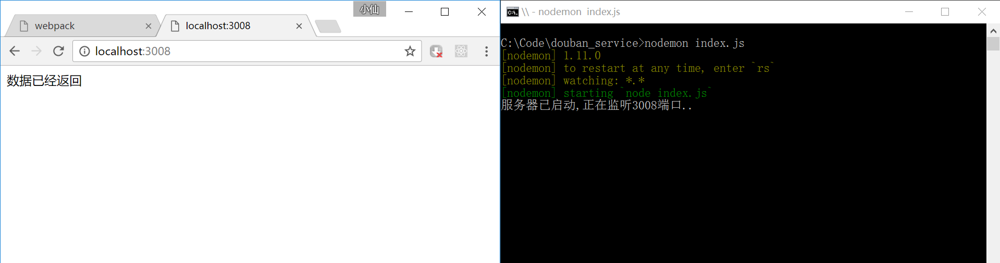
请求豆瓣API数据
豆瓣API : https://developers.douban.com/wiki/?title=guide 正在热映: https://api.douban.com/v2/movie/in_theaters?start=3&count=10 即将上映: https://api.douban.com/v2/movie/coming_soon?start=6&count=10 TOP250: https://api.douban.com/v2/movie/top250?start=6&count=10 详细数据: https://api.douban.com/v2/movie/subject/1764796 搜索数据: https://api.douban.com/v2/movie/search?q={text}
使用request请求第三方数据
安装
request
npm install request --save
引入
request
const request = require('request')
使用
request发送请求
app.get('/getMovieListData', function (req, res, next) {
const url = 'https://api.douban.com/v2/movie/in_theaters?start=3&count=10'
request(url, function (error, response, body) {
if(!error&&response.statusCode == 200){
res.json(body)
}
});
})
数据接口配置文件
真实开发中会有测试服务器地址和线上服务器地址,所以一般接口信息写在单独的配置文件中
export default {
SERVER_PATH:'127.0.0.1',
PORT:'3008',
HTTP:'http://',
VERSION:'1.0.0'
}
CORS解决跨域请求
客户端8080端口请求服务端3008端口，可以在服务端配置请求头使用CORS解决跨域
// 实现cors跨域
app.use(function (req,res,next) {
res.header("Access-Control-Allow-Origin", "*");
res.header("Access-Control-Allow-Headers", "Content-Type,Content-Length, Authorization, Accept,X-Requested-With");
res.header("Access-Control-Allow-Methods","PUT,POST,GET,DELETE,OPTIONS");
next()
})
客户端请求数据
在APP中访问
movie路由请求数据MovieService中使用fetch发起请求
getMovieListData() {
// 拼接请求路径
const url = `${config.HTTP}${config.SERVER_PATH}${config.PORT}/getMovieListData`
fetch(url)
.then((response) => {
if (response.ok) {
return response.json()
} else {
console.error('服务器繁忙，请稍后再试；\r\nCode:' + response.status)
}
})
.then((data) => {
console.log(data)
})
.catch((err) => {
console.error(err)
})
}

渲染电影列表
Promise处理返回数据
promise实例对象通用代码
var promise = new Promise(function(resolve, reject) {
// ... some code
if (/* 异步操作成功 */){
resolve(value);
} else {
reject(error);
}
});
返回promise对象
return new Promise(function(resove,reject){
fetch(url)
.then((response) => {
if (response.ok) {
return response.json()
} else {
console.error('服务器繁忙，请稍后再试；\r\nCode:' + response.status)
}
})
.then((data) => {
// 请求成功调用resove
resove(data)
// console.log(data)
})
.catch((err) => {
// 请求失败调用reject
reject(err)
// console.error(err)
})
})
接收promise对象数据
fetch=()=>{
// 接收promise对象数据
const promise = service.getMovieListData()
// 处理数据
promise.then(
function(data){
console.log(data)
},
function(err){
console.log(err)
}
).catch(function(err){
console.log(err)
})
}
渲染页面
改变
state，去掉遮罩，存储数据
render中渲染页面// 渲染电影列表 renderMovieList = ()=> { return ( <div> {this.state.movieListData.map(this.renderItem)} </div> ) } // 渲染每一行数据 renderItem = (item)=>{ return ( // 循环渲染子组件指定KEY <div key={item.id}> <img src={item.images.small} alt=""/> <div> <h1>{item.title}</h1> <span>{item.year}</span> </div> </div> ) };添加样式

详细页面
跳转详细页面
// 获取router
static contextTypes = {
router:React.PropTypes.object
}
// 跳转到详细页面
goDetail=(id)=>{
this.context.router.push(`/movie/movieDetail/${id}`)
}
// 绑定点击事件
// 循环渲染子组件指定KEY
<div className='movieList_item' key={item.id} onClick={()=>this.goDetail(item.id)}>
<img src={item.images.small} alt=""/>
<div>
<h1>{item.title}</h1>
<span>{item.year}</span>
</div>
</div>
遮罩及初始化数据
this.state = {
isLoading: true,
movieDetailData: {}
}
render() {
if (this.state.isLoading) {
return this.renderLoading()
} else {
return this.renderMovieDetail()
}
}
请求详细页面数据

渲染页面
HTML
renderMovieDetail = () => {
return (
<div className='movieDetail_container'>
<div className='movieDetail_image'>
<img src={this.state.movieDetailData.images.large} alt=""/>
</div>
<h1>{this.state.movieDetailData.title}</h1>
<p>{this.state.movieDetailData.summary}</p>
</div>
)
}
CSS
.movieDetail_container {
height: 100%;
overflow-y: scroll;
}
.movieDetail_image {
display: flex;
justify-content: center;
align-items: center;
}
加载更多
监听滚动事件
// 组件更新函数
componentDidUpdate(){
this.addEventListener()
}
// 添加监听滚动事件
addEventListener=()=>{
// 获取真实DOM节点
this.refs.scrollContainer.addEventListener('scroll',function(e){
console.log(e)
})
}
// 真实DOM上使用ref添加标记
// 渲染电影列表
renderMovieList = ()=> {
return (
<div ref='scrollContainer' className='movieList_container'>
{this.state.movieListData.map(this.renderItem)}
</div>
)
}
判断滚动到底部
if (e.target.scrollHeight == e.target.offsetHeight +parseInt(e.target.scrollTop)) {
console.log('滚动到底部了')
// 重新请求数据
_this.fetch();
}
重新加载数据
重新加载数据需要重新发送请求，在赋值数据时需要判断原数组是否有数据，如果有则进行拼接数据

分页功能
服务器代码
// 电影列表
app.get('/getMovieListData', function (req, res, next) {
// 获取传递的请求参数信息
const message = JSON.parse(req.query.message);
console.log(message)
const url = `https://api.douban.com/v2/movie/${message.movieType}?start=${message.start}&count=${message.count}`
console.log(url)
request(url, function (error, response, body) {
if (!error && response.statusCode == 200) {
res.json(body)
}
});
})
后台接口代码
// 获取电影列表
getMovieListData(message) {
// 拼接请求路径
const url = `${config.HTTP}${config.SERVER_PATH}:${config.PORT}/getMovieListData?message=${message}`
console.log(url)
// 返回一个promise对象
return new Promise(function (resolve, reject) {
fetch(url)
.then((response) => {
if (response.ok) {
return response.json()
} else {
console.error('服务器繁忙，请稍后再试；\r\nCode:' + response.status)
}
})
.then((data) => {
// 请求成功调用resolve
resolve(JSON.parse(data))
// console.log(data)
})
.catch((err) => {
// 请求失败调用reject
reject(err)
// console.error(err)
})
})
}
组件代码
// 请求电影列表数据
fetch = (movieType) => {
// 深拷贝一份数组数据出来
let movieListData = [].concat(this.state.movieListData)
// 深拷贝一个对象
let message = Object.assign({}, this.state.message)
// 每次发送请求时改变请求参数
message.movieType = movieType
message.start = (message.pageIndex - 1) * message.count
message.pageIndex++
const _this = this
// 接收promise对象数据
const promise = service.getMovieListData(JSON.stringify(message))
// 处理数据
promise.then(
// 获取到数据
function (data) {
console.log(data)
// 判断是否已经有数据
if (movieListData.length > 0) {
// 如果有数据 则将新数据进行拼接
movieListData = movieListData.concat(data.subjects)
} else {
// 没有数据直接赋值请求回来的数据
movieListData = data.subjects
}
_this.setState({
isLoading: false,
movieListData: movieListData,
message:message
})
},
function (err) {
console.log(err)
}
).catch(function (err) {
console.log(err)
})
}

分页功能完善
防止触发多次请求
// // 防止多次触发请求
if (_this.state.isBottom) {
return;
}
// 标记已经滚动到底部
_this.setState({
isBottom: true
})
// 重新请求数据
_this.fetch(_this.state.message.movieType);
显示提示信息
// 渲染电影列表
renderMovieList = () => {
return (
<div ref='scrollContainer' className='movieList_container'>
{this.state.movieListData.map(this.renderItem)}
<div className={this.state.isBottom?"movieList_show":"movieList_hide"}>
<span>正在请求数据,请稍等...</span>
</div>
</div>
)
}
CSS:
.movieList_show{
background-color: palevioletred;
display: flex;
justify-content: center;
align-items: center;
}
.movieList_hide{
display: none;
}
移动APP第五天
电影类别切换
传递类别信息
MovieContainer
<div className='movie_menu'>
<Link to="/movie/movieList/in_theaters">正在热映</Link>
<Link to="/movie/movieList/coming_soon">即将上映</Link>
<Link to="movie/movieList/top250">TOP250</Link>
</div>
Routers
<Route path="movieList/:movieType" component={MovieListContainer} />
MovieListContainer
// 生命周期函数：接收到参数时调用
componentWillReceiveProps(nextProps){
// console.log(nextProps)
// 传递电影类别
this.fetch(nextProps.params.movieType)
}
切换类别重置请求信息
if (movieType != this.state.message.movieType) {
this.setState({
isLoading: true,
movieListData: [],
// 是否滚动到底部
isBottom: false,
// 请求参数
message: {
// 电影数据类型
movieType: movieType,
pageIndex: 1,
start: 0,
count: 10
}
})
return;
}
根据loading状态触发请求
// 组件更新函数
componentDidUpdate() {
if(this.state.isLoading){
this.fetch(this.state.message.movieType)
}else{
this.addEventListener()
}
}
解决切换类别时scroll触发请求
在
loading状态注销滚动事件
componentDidUpdate() {
if(this.state.isLoading){
// 防止切换类别时scroll在底部自动触发请求
this.refs.scrollContainer.onscroll = null;
this.fetch(this.state.message.movieType)
}else{
this.addEventListener()
}
}
loading添加样式
<div ref='scrollContainer' className='movieList_container'>
正在加载数据....
</div>
记录选中类别
添加点击事件
<div className='movie_menu'>
<Link className={this.state.movieType == 'in_theaters'?'movie_current':''} to="/movie/movieList/in_theaters" onClick={() => this.changeMovieType('in_theaters')}>正在热映</Link>
<Link className={this.state.movieType == 'coming_soon'?'movie_current':''} to="/movie/movieList/coming_soon" onClick={() => this.changeMovieType('coming_soon')}>即将上映</Link>
<Link className={this.state.movieType == 'top250'?'movie_current':''} to="movie/movieList/top250" onClick={() => this.changeMovieType('top250')}>TOP250</Link>
</div>
根据点击事件传递的类别改变记录的类别信息
// 根据点击事件改变类别信息
changeMovieType = (movieType) => {
this.setState({
movieType:movieType
})
}
根据类别更改样式
className={this.state.movieType == 'in_theaters'?'movie_current':''}
搜索功能
受控表单
<input type="text" value={this.state.keyword} onChange={this.changeKeyWord}/>
// 根据输入的文字改变记录的信息 然后更改表单中的显示
changeKeyWord = (e)=>{
this.setState({
keyword:e.targe.value
})
}
跳转页面
// 1. 添加点击事件
<button onClick={this.goSearch}>搜索</button>
// 2. 页面跳转
goSearch = () => {
// 使用router的push方法跳转页面 this.context.router.push(`/movie/movieSearch/${this.state.keyword}`)
// 清空关键字
this.setState({
keyword: '',
movieType: ''
})
}
// 3.接收参数
// 路由
<Route path="movieSearch/:keyword" component={MovieSearchContainer} />
// MovieSearchContainer
console.log(this.props.params.keyword)
请求数据
MovieSearchContainer中逻辑和MovieListContainer中一样,只需要把movieType全部改成keyword
服务器渲染
发布代码
使用
npm run publish发布代码，将代码放到服务器上,配置服务器使用服务器渲染页面
// 修改webpack.publish.config
output: {
// 输出至哪个文件夹
path: path.resolve(__dirname, 'dist'),
// 输出的文件名
filename: 'bundle.js',
publicPath: '/',
sourceMapFilename:'[name].map'
}
配置服务器
将发布后的代码拷贝到服务器下的
public文件夹，然后服务器添加如下信息
app.use(express.static(__dirname+'/public'))
app.get('*',function(req,res,next){
res.sendFile(path.resolve(__dirname,'public','index.html'))
})

此时就可以用服务器地址访问项目
异步代码加载
凡是非首页都需要用到该页面时再加载js代码
更改路由配置
取消代码引入

异步加载代码
<Route path="movie" getComponent={ (nextState, callback) => { require.ensure([], (require) => { callback(null, require("../containers/MovieContainer.js").default) }, "movie") } } >
修改发布配置
添加
chunkFilename
output: {
// 输出至哪个文件夹
path: path.resolve(__dirname, 'dist'),
// 输出的文件名
filename: 'bundle.js',
publicPath: '/',
chunkFilename: '[name]_[chunkhash:8]_chunk.jsx',
sourceMapFilename: '[name].map'
}
重新发布代码
npm run publish
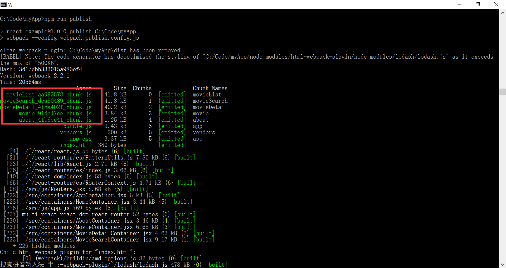
webpack2学习
介绍
- webpack和gulp一样是一个自动化的构建工具
- 你不想做的东西都交给工具去做，比如混淆，压缩，移动，合并，添加浏览器兼容性词缀
gulp更适合做简单的流程性的操作，webpack是专门为处理SPA应用的复杂文件依赖而出现的
- 如图
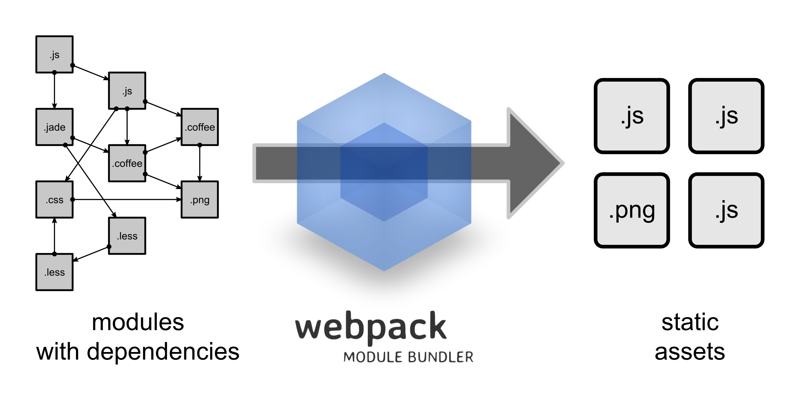
安装依赖
npm install webpack -gnpm install webpack -save-dev
编写配置文件
var path=require('path')
module.exports = {
// 指定spa应用的入口文件
entry: path.resolve(__dirname, 'src/js/app.js'),
// 指定项目构建的输出位置
output: {
path: path.resolve(__dirname, 'dist'),
filename: 'bundle.js',
}
}
运行
- 在项目根目录执行
webpack可以启动默认配置文件webpack.config.js - 运行指定配置文件执行
webpack --config webpack.develop.config.js
把运行命令放到package.json文件中
- 启动命令还可以加很多参数
webpack --config webpack.develop.config.js --progress --profile --colors - 这么多参数不可能都记住，所以将启动命令写到package.json的script标签中
监听代码变化自动重新构建
- 代码的变动需要多次运行
npm run develop所以我们需要自动监听代码变动，然后运行构建，于是我们用到了webpack-dev-server这个模块
webpack-deve-server介绍
- webpack-dev-server封装了webpack和http模块
- 所以webpack的所有命令，webpack-deve-server都可以使用
- webpack-dev-server可以指定一个文件夹启动一个服务
- webpack-dev-server启动的服务所有的内容都构建在内存中
- 因为构建在内存中速度快，还有一个功能，就是没有变化的文件，不重新构建，只有变化了的文件才从新执行构建
- 作用
- 一是监听文件变化自动重新构建
- 二是自动刷新浏览器，可以热更新
基本使用
- 下载
npm install webpack-dev-server@9.9.9 -save-dev,注意选择2.x版本的模块 - 修改package.json文件中的命令
webpack-dev-server --config webpack.develop.config.js --progress --profile --colors 修改开发配置文件
- webpack2中推荐所有的服务配置信息都写到配置文件中的devServer属性中，不要写在package.json中
- 基本配置
devServer: { // 指定启动服务的更目录 contentBase: __dirname + '/src', // 指定端口号 port: 8080, host: 'localhost', // 以下信息可有可无，为了完整 inline: true, historyApiFallback: true, noInfo: false, // stats: 'minimal', // publicPath: publicPath },
热更新
- 可以不刷新浏览器更新
- 修改配置文件
devServer: {
// 指定启动服务的更目录
contentBase: __dirname + '/src',
// 指定端口号
port: 8080,
host: 'localhost',
// 启用热更新
hot: true,
// 以下信息可有可无，为了完整
inline: true,
historyApiFallback: true,
noInfo: false,
// stats: 'minimal',
// publicPath: publicPath
},
- 需要配合一个内置插件一起使用
var webpack=require('webpack')
plugins: [
new webpack.HotModuleReplacementPlugin(),
]
Loaders（加载器）
- 在真正构建之前做一些预处理操作就叫加载器
处理es6、es7、jsx语法加载器
npm install babel-loader --save-devnpm install babel-core babel-preset-es2015 babel-preset-react -save-devnpm install babel-preset-stage-0 babel-preset-stage-1 babel-preset-stage-2 babel-preset-stage-3 --save-devnpm install babel-plugin-transform-runtime -save-dev这个插件的作用是支持es7特性- 修改配置文件
module: {
rules: [
{
test: /\.jsx?$/,
exclude: /node_modules/,
use: [
{
loader: "babel-loader"
}
]
}
]
}
- 创建.babelrc文件
{
"presets": [
"es2015",
"react",
"stage-0",
"stage-1",
"stage-2",
"stage-3"
],
"plugins": [
"transform-runtime"
]
}
处理css文件引用的加载器
npm install style-loader css-loader -save-dev- 修改配置文件
// 处理在js中引用css文件
{
test: /\.css$/,
use: ['style-loader', 'css-loader'],
},
处理scss或者less文件引用的加载器
npm install sass-loader less-loader node-sass -save-dev- 修改配置文件
// 处理在js中引用scss文件
{
test: /\.scss$/,
use: ['style-loader', 'css-loader', 'sass-loader'],
},
{
test: /\.less$/,
use: ['style-loader', 'css-loader', 'less-loader'],
},
处理图片引用的加载器
npm install url-loader file-loader -save-dev- 修改配置文件
// 处理图片操作 25000bit ~3kb
{
test: /\.(png|jpg|jpeg|gif)$/,
use: 'url-loader'
},
处理字体文件引用的加载器
npm install url-loader file-loader -save-dev- 修改配置文件
// 处理字体文件
{
test: /\.(eot|woff|ttf|woff2|svg)$/,
use: 'url-loader'
}
发布策略
- 简单的说就是将开发阶段的配置文件复制一份到部署的配置文件中，然后删删改改就可以了
- 把热更新插件删除，devServer属性删除
- 修改图片处理和字体处理加载器
// 处理图片操作 25000bit ~3kb
{
test: /\.(png|jpg|jpeg|gif)$/,
use: 'url-loader?limit=25000&name=images/[name].[ext]'
},
// 处理字体文件
{
test: /\.(eot|woff|ttf|woff2|svg)$/,
use: 'url-loader?limit=100000&name=fonts/[name].[ext]'
}
- 接下来运行
npm run publish就发布了 - 不过要注意所有的css，js，图片都构建到一个bundle.js文件中了
Plugins（插件）
- 在真正构建之后做一些后处理操作就叫插件
删除插件
npm install clean-webpack-plugin -save-dev- 使用
var CleanPlugin = require('clean-webpack-plugin');
plugins: [
// 删除文件夹的插件
new CleanPlugin(['dist'])
]
抽取公共js插件
- 使用
entry: {
app: path.resolve(__dirname, 'src/js/app.js'),
vendors: ['vue','vue-router','vuex']
},
plugins: [
// 分离第三方应用的插件
new webpack.optimize.CommonsChunkPlugin({name: 'vendors', filename: 'vendors.js'}),
]
提取样式文件插件
npm install extract-text-webpack-plugin@4.4.4 -save-dev注意下载2.x版本- 使用
// 1、抽取css的第三方插件
var ExtractTextPlugin = require("extract-text-webpack-plugin");
// 2、处理在js中引用css文件
{
test: /\.css$/,
use: ExtractTextPlugin.extract({
fallbackLoader: "style-loader",
loader: "css-loader"
})
},
// 处理在js中引用scss文件
{
test: /\.scss$/,
use: ExtractTextPlugin.extract({
fallbackLoader: "style-loader",
loader: "css-loader!sass-loader"
})
},
//3、加一个插件
plugins: [
// 删除文件夹的插件
new ExtractTextPlugin("app.css"),
]
自动生成html插件
npm install html-webpack-plugin -save-dev- 在根目录创建template.html
<!DOCTYPE html>
<html lang="en">
<head>
<meta charset="UTF-8">
<meta name="viewport"
content="width=device-width, user-scalable=no, initial-scale=1.0, maximum-scale=1.0, minimum-scale=1.0">
<title>webpack学习</title>
</head>
<body>
<div id="app"></div>
</body>
</html>
- 修改配置文件
var HtmlWebpackPlugin = require('html-webpack-plugin');
plugins: [
// 自动生成html插件
new HtmlWebpackPlugin({
template: './src/template.html',
htmlWebpackPlugin: {
"files": {
"css":["app.css"],
"js": ["vendors.js", "bundle.js"]
}
},
minify: {
removeComments: true,
collapseWhitespace: true,
removeAttributeQuotes: true
}
}),
]
压缩插件
- 修改配置文件
plugins: [
// 压缩混淆js代码插件
new webpack.optimize.UglifyJsPlugin({
beautify: false,
mangle: {
screw_ie8: true,
keep_fnames: true
},
compress: {
warnings: false,
screw_ie8: true
},
comments: false
}),
]
定义生产环境插件
- 修改配置文件
plugins: [
// 在构建的过程中删除警告
new webpack.DefinePlugin({
'process.env':{
NODE_ENV:'"production"'
}
})
]
自动打开浏览器插件
npm install open-browser-webpack-plugin -save-dev- 使用
// 自动打开浏览器插件
var OpenBrowserPlugin = require('open-browser-webpack-plugin')
plugins: [
// 删除文件夹的插件
new OpenBrowserPlugin({url: 'http://localhost:8080/', browser: 'chrome'})
]
高级
和gulp的集成
npm install gulp del gulp-sequence -save-dev- 编写配置文件
// gulp的任务是控制执行流程，webpack的任务是处理复杂引用的依赖
var gulp = require('gulp');
// 删除文件和目录
var del = require('del');
// 按顺序执行
var gulpSequence = require('gulp-sequence');
// 引入webpack的本地模块
var webpack = require("webpack");
// 引入wbpack的配置文件
var webpackConfig = require("./webpack.publish.config.js");
gulp.task('default', ['sequence'], function () {
console.log("项目构建成功");
});
// 流程控制
gulp.task('sequence', gulpSequence('clean','webpack'));
// 删除文件和文件夹
gulp.task('clean', function (cb) {
//del('dist);// 如果直接给dist的目录，项目启动的顺序还有清除结果会报错，所以要写的更详细一些
del(['dist/*.js', 'dist/*.css', 'dist/images', 'dist/fonts,','dist/*.html']).then(function () {
cb()
});
});
//写一个任务，在gulp中执行webpack的构建
// gulp 负责任务流程部分的操作，webpack负责复杂模块系统的引用分离工作
gulp.task('webpack', function (cb) {
// 执行webpack的构建任务
webpack(webpackConfig, function (err, stats) {
if (err) {
console.log("构建任务失败");
} else {
cb();
}
});
});